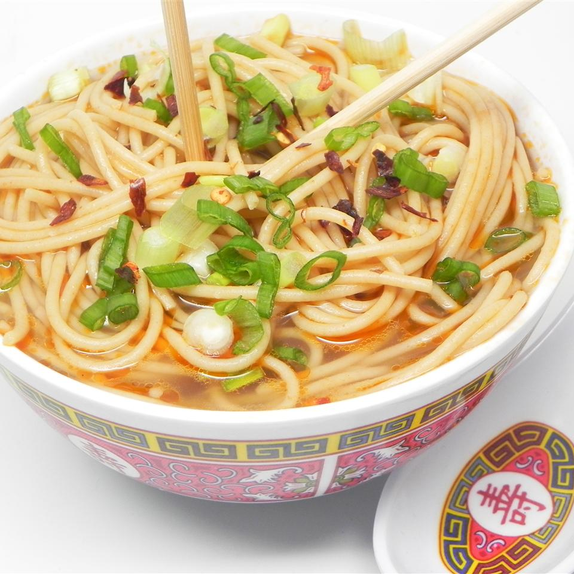

All Natural Ramen Noodles

This ramen recipe uses no MSG or artifical ingredients. This is a all natural tasty ramen recipe you can enjoy with friends or alone
Ingredients
- 4 cups vegetable broth
- 4 cups water
- 1 tablespoon soy sauce
- 1 tablespoon sesame oil
- 1 tablespoon ground ginger
- 1 tablespoon Sriracha hot sauce
- 9 ounces soba noodles
Steps
- Combine broth, water, soy sauce, sesame oil, ginger, and hot sauce in a pot.
- Bring to a boil. Add noodles to boiling broth mixture and cook until noodles are tender yet firm to the bite, 5 to 7 minutes.
- Transfer noodles to serving bowls and top with desired amount of broth.
Return to main page